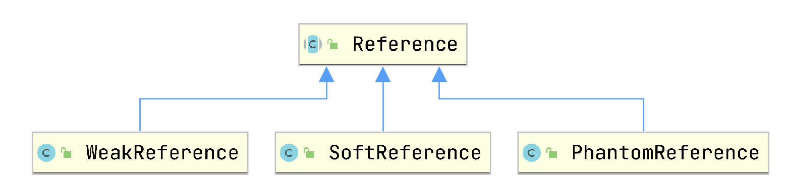

Java 强引用、软引用、弱引用以及虚引用
文章目录
1. Java 中的强引用、软引用、弱引用、虚引用
Java 中强引用、软引用、弱引用、虚引用用于控制堆内实例被回收时的特性，如下表所示：
| 引用类型 | 回收时机 |
|---|---|
| 强引用 StrongReference | never |
| 软引用 SoftReference | 内存不足 |
| 弱引用 WeakReference | GC 时 |
| 虚引用 PhantomReference | Unknown |
最基础的引用方式就是强引用，如果一个对象被强引用着，那么这个对象就无法被 GC。
因此测试软引用、弱引用、虚引用必须确保对象本身没有被强引用，否则实例总是无法被回收。或者说要确保该实例仅仅被SoftReference、WeakReference 或者 PhantomReference 实例引用。
下面是测试代码，可以在如下仓库中找到源码。
Spongecaptain/referenceInJava: Java 强引用、软引用、弱引用以及虚引用测试项目 (github.com)
为了实验的完整性，在此说明 JDK 版本：
|
|
1.1 强引用
强引用的实例是一种无论何时都不会被 GC 回收的实例，测试代码如下：
|
|
输出：
|
|
1.2 软引用
软引用的实例会在内存不足时会被回收，测试代码如下：
|
|
输出：
|
|
上述代码需要将堆内存大小进行限制，可以在 IntelliJ 的 Run/Debug Configurations 中配置 VM Options 为 -Xms10m -Xmx10m。可以这么认为：
- 堆内内存限制为最大 10MB
- 依次申请 9MB 以及 4 MB 的内存；
- 第二次申请内存时，合计的内存超过 10MB，因此就将 9MB 的软引用内存释放。
注意事项：任意一次内存申请超过最大堆内存时会抛出 OOM Error，此时也会导致内存不足，释放软引用实例。
1.3 弱引用
虚引用的实例会在 GC 时就会被回收，测试代码如下：
|
|
输出：
|
|
1.4 虚引用
虚引用的实例在何时被回收是不确定的。并且其必须结合 ReferenceQueue 一起使用，因为其构造器定义如下：
|
|
虚拟用的测试代码如下：
|
|
输出：
|
|
虚拟引用 weakReference#get 总是会返回 null，引用形同虚设。
2. ReferenceQueue 与 ReferenceHandler
2.1 Reference 的四种状态
你可以在 Reference 类的 Javadocs 中看到，一个被 Reference 引用的实例处于如下几种可能状态：
- Active：创建 Reference 实例成功后的初始状态。
- Pending：在 pending-Reference list 中的 Reference 元素，待被 ReferenceHandler 线程处理；
- Enqueued：进入 ReferenceQueue 中的对象，等待被回收；
- Inactive：ReferenceQueue 中的对象被取出后，就会处于 Inactive 状态。
可见，Reference 实例的状态与 ReferenceQueue 队列以及 ReferenceHandler 线程密切相关。
2.2 ReferenceHandler 线程
下图是 Reference 类的继承关系：

Reference 拥有一个静态字段 ReferenceHandler，后者是 Thread 的子类。可见，ReferenceHandler 线程是全局共享的静态实例。
ReferenceHandler 线程在 Reference 的 static 语句块中被初始化并启动，其线程优先级被设置为最高。
ReferenceHandler 作为 daemon 线程而存在，其运行逻辑就是在 while(true) 循环中不断调用 Reference#tryHandlePending 方法。此方法的运行逻辑主要为：
- 得到 Reference 的静态类字段
Reference<Object> pending - 为 pending 是否为 Cleaner 实例做一个标记
- 将 pending 赋值为 pedding.discovered
- 取消 pedding.discovered 的强引用
- 当 pending 为 Cleaner 类的实例时，调用其 clean 方法
- 检查 pending 构造时的 ReferenceQueue 是否有指定，如果有就将 pedding 加入到此 ReferenceQueue 中，否则不做其他工作。
但是你会发现，没有任何 Java 回负责 Reference#pending 字段的赋值。事实上，这个字段由 GC 线程负责赋值。
2.3 ReferenceQueue 队列
不仅仅 PhantomReference 虚引用的构造器可以接收一个 ReferenceQueue 实例，事实上，上面的 SoftReference、WeakReference 类的构造器也能接收一个 ReferenceQueue 实例，如下所示：
|
|
并且 SoftReference、WeakReference 内部都有 ReferenceQueue 实例：
- 当构造器不输入 ReferenceQueue 实例时，其默认使用 ReferenceQueue.NULL 实例，其类型为
ReferenceQueue<Object>； - 否则，使用构造器输入的 ReferenceQueue 实例；
那么问题来了，谁来负责此队列上 Reference 实例的处理呢？
- 首先，ReferenceHandler 线程仅最多会将从 GC 线程传递来的 Reference 实例存放到 ReferenceQueue 队列中，自己不负责处理。
- 其次，没有任何类库线程负责从 ReferenceQueue 队列中取出 Reference 元素。
因此，就是我们程序员自己需要负责从 ReferenceQueue 队列中取出 Reference 元素，否则就不要选择带有 ReferenceQueue 的 Reference 类构造器。
换言之，ReferenceQueue 起到了一个延迟回收的机制：
- 如果不使用 ReferenceQueue，那么 ReferenceHandler 线程就会将 Reference 实例就交给 GC 线程释放；
- 如果使用 ReferenceQueue，那么 ReferenceHandler 线程会将 Reference 实例放入到 ReferenceQueue 中，用户线程决定 ReferenceQueue 中的元素如何处理。
基于这种思路，我们可以写出如下的代码：
|
|
3. 应用案例
3.1 WeakHashMap
如下是一个 WeakHashMap 的使用案例：
|
|
WeakHashMap 基于如下技术实现：
- WeakReference
- ReferenceQueue
- Finalizer
其中 Finalizer 也是一种 Reference 列实例，其内部拥有一个全局静态 FinalizerThread 线程实例。
WeakHashMap 类的内部原理如下：
- Entry 继承于 WeakReference，其 WeakReference#referent 字段指向 key
- 当 key 失去强引用后，并 GC 后，任何线程调用 WeakHashMap#expungeStaleEntries 方法都会将 Entry.val 置为 null，便于后续 GC 回收，并将 Entry 删除；
调用 WeakHashMap#expungeStaleEntries 方法的线程分为两种类型：
- Finalizer#FinalizerThread 线程，其由 GC 线程触发；
- 用户线程：当用户线程调用 WeakHashMap#put、get、remove、size 等方法都会先执行一遍 WeakHashMap#expungeStaleEntries 方法；
注意事项：很多文章并没有注意到 Finalizer#FinalizerThread 线程也会负责调用 WeakHashMap#expungeStaleEntries 方法，事实上，如果你在案例代码中 System.out.println(map.get("hello")); 打上断点，早在执行 get 方法前，WeakHashMap 内部的 size 就已经是 0 了。
3.2 Netty 内存泄漏检测
内存泄漏（Memory leak）是在计算机科学中，由于疏忽或错误造成程序未能释放已经不再使用的内存。内存泄漏并非指内存在物理上的消失，而是应用程序分配某段内存后，由于设计错误，导致在释放该段内存之前就失去了对该段内存的控制，从而造成了内存的浪费。
Netty 利用：
- WeakReference
- 计数机制
来检测内存泄漏，具体来说，Netty 通过如下的方式实现：
ResourceLeakDetector<T>类负责为某一种资源的泄漏检测，资源的类型即泛型类型T；- ResourceLeakTracker 接口其有一个默认唯一子类：ResourceLeakDetector.DefaultResourceLeak。ResourceLeakTracker 实例与一个资源实例一一对应，例如 ByteBuf。其用于存储资源释放情况的相关字段以及提供相关方法。
- ResourceLeakDetector.DefaultResourceLeak 类继承了 WeakReference 类，其一开始指向待被释放的资源。当资源被 GC 回收时，其会被加入到 ResourceLeakDetector#refQueue 队列中。
- Record 类用于存储方法调用栈，便于内存泄漏问题出现时的问题定位。
Netty 的将内存泄漏定义为：资源已经被 GC 回收，但是并没有执行指定次数的 release 方法。如果光这样说，你一定难以理解这种情况为啥算是内存泄漏了？这里解释一下。Netty 中内存分配即申请一个 ByteBuf 实例，ByteBuf 可以是池化的，也可以是未池化的。如果 ByteBuf 未池化，最终被 GC 线程回收，那也无妨。但是如果 GC 了内存池中的实例，那么相当于没有利用到内存池能够重用内存的特性，这是不符合要求的。
总之，本节内存泄漏实际上指的是：该返回内存池的内存应当返回内存池，而不是交给 GC 线程来回收。因为内存池的目的就在于重用内存，避免 GC，提高运行效率。
回过头来，下面说明一下 Netty 内存泄漏检测的内部执行原理：
1.内存申请
内存申请时，计数器+1，并将 ByteBuf 对应的弱引用对象 DefaultResourceLeak 加入到 ResourceLeakDetector.allLeaks 队列中；
|
|
ResourceLeakDetector.allLeaks 存放着弱引用对象，弱引用对象内部维护着一个资源释放计数器。allLeaks 本质是一个 Hashset，利用 ConcurrentHashMap 实现。
注意：正如前面章节所述，allLeaks 链表引用弱引用 DefaultResourceLeak 实例并不会影响 DefaultResourceLeak 对应的 ByteBuf 资源被 GC 线程回收。
2.内存释放
内存释放时，将 ByteBuf 在 ResourceLeakDetector.allLeaks 的 DefaultResourceLeak 实例内部计数器 -1。如果计数器的个数为 0，那么说明内存正确被释放了，那么就将此资源对应的 DefaultResourceLeak 从 allLeaks 中移除。
3.GC 时
当 ByteBuf 被 GC 回收时，通过 GC 线程、ReferenceHandler 线程的合作，会将 ByteBuf 对应的弱引用对象 DefaultResourceLeak 实例放入到 ResourceLeakDetector#refQueue 队列。
4.内存泄漏检测
当 NioEventLoop 在 ChannelPipeline 中试图向内存池申请内存时，就会先进行一次内存泄漏检测，其方式是调用 ResourceLeakDetector#track0 方法，然后进入最核心的 ResourceLeakDetector#reportLeak 方法。
- 如果内存泄漏检测被关闭，那么仅仅是将 ResourceLeakDetector#refQueue 队列清空；
- 否则，遍历弹出 refQueue 队列中所有弱引用实例，将 refQueue 队列中的每一个元素到 allLeaks 队列中检查是否也存在，如果存在，先移除，此情况说明内存泄漏了。否则内存没有泄漏；
- 内存泄漏最终通过打印 Report 中的堆栈信息日志反映出来；
可见，Netty 内存泄漏检测的本质就是维护两个数据结构：
- allLeaks 存放着没有执行指定资源释放次数的弱引用对象；
- refQueue 将存放资源已经被 GC 回收的弱引用对象；
本质就是基于队列+异步线程（GC 线程、ReferenceHandler 线程、NioEventLoop 用户线程）维护的一个异步消息通知与回调机制。通知是资源被 GC 了，回调则是用户线程自己负责执行。
4. 总结
Java 中强引用、软引用、弱引用、虚引用用于控制堆内实例被回收时的特性，如下表所示：
| 引用类型 | 回收时机 |
|---|---|
| 强引用 StrongReference | never |
| 软引用 SoftReference | 内存不足 |
| 弱引用 WeakReference | GC 时 |
| 虚引用 PhantomReference | Unknown |
GC 线程会负责一件事：
- 当触发事件时，将 Reference 实例的 referent 字段设置为 null；
- 将 Reference 实例赋值给 Reference#pending 静态字段；
ReferenceHandler 线程在 Reference 的 static 语句块中启动，其负责如下的策略：
- 如果 Reference 实例是 Cleaner 实例，那么调用 Cleaner#clean 方法；
- 如果 Reference 实例内部有指定的 ReferenceQueue 队列实例，那么就将此 Reference 实例加入到 ReferenceQueue 队列中；
- 继续处理 pending 链表中下一个元素（Reference.discovered）；
用户线程则可以选择继承 Reference 以及 ReferenceQueue 队列，负责从队列中取出 Reference 实例，做出相应处理后，最终释放 Reference 实例。
其中，基于 ReferenceQueue 可以实现一种回调通知机制，通知的方式是：ReferenceHandler 线程负责将 Reference 实例放入到 ReferenceQueue 队列中。回调策略由用户线程编写，ReferenceQueue 内部的 Reference 实例也由用户线程负责取出以及处理。
注意：放入到 ReferenceQueue 中的 Reference 实例，其指向的资源已经被 GC 回收了。